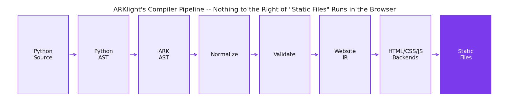

How Each Tool Actually Works
The frameworks on the left ship a runtime to the browser and keep the page alive with it. ARKlight compiles once, at build time, and the browser gets plain files.
Output model, at a glance
React
Runtime + virtual DOM diffing
Vue
Runtime + reactive proxies
Svelte
Compiles away -- vanilla JS, no runtime
Angular
Runtime + zone.js/signals
ARKlight
Compiles to static HTML at build time. JS is optional, closed-vocabulary, and only shipped if a page actually declares State(...) -- nothing runs in the browser unless the page asked for it.
Full comparison
Axis | React | Vue | Svelte | Angular | ARKlight |
|---|---|---|---|---|---|
| Output model | Runtime + virtual DOM | Runtime + reactive proxies | Compiles away, vanilla JS | Runtime + signals/zone.js | Compiles to static HTML; JS optional & closed-vocabulary |
| Authoring language | JS/JSX | JS/Vue SFC | JS/Svelte SFC | TypeScript | Python |
| Client-side state | Full (hooks) | Full (reactivity) | Full (runes) | Full (RxJS/signals) | Closed State/Bind/Action registry |
| Arbitrary custom JS | Yes | Yes | Yes | Yes | No -- permanent non-goal |
| Build toolchain | Bundler required | Bundler required | Compiler required | CLI/AOT required | None -- pip install + one CLI |
| SSR / meta-framework | Next.js | Nuxt | SvelteKit | Angular Universal | N/A -- output already static |
| Responsive styling | @media, full CSS | @media, full CSS | @media, full CSS | @media, full CSS | Intrinsic layout only, no @media yet |
| Ecosystem size | Largest | Large | Small, growing | Large (enterprise) | New -- one package |
| Single-file distribution | No | No | No | No | Yes -- sealed .ark bundle |
ARKlight's own pipeline
Python Source -> Python AST (static discovery) -> ARK AST (executed) -> Normalization -> Validation -> Website IR -> HTML/CSS/JS backends -> static files. No step in this chain runs in the browser.
